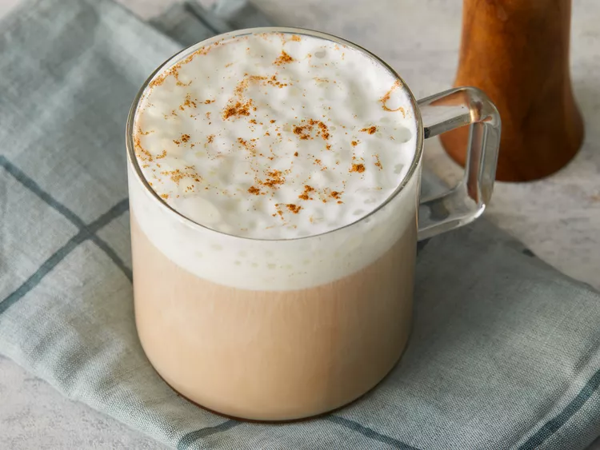

Chai-Tea_latte

This milky chai tea latte is really similar to the brand Oregon Chai.
Simply delicious either hot or iced! This will save you more money than buying the chai.
In India, each family has their own way of making it,
so you should experiment to find your favorite blend.
Ingredients
- ¾ cup boiling water
- 1 chai tea bag
- 1 ½ teaspoons honey
- 1 teaspoon white sugar
- ¾ cup milk